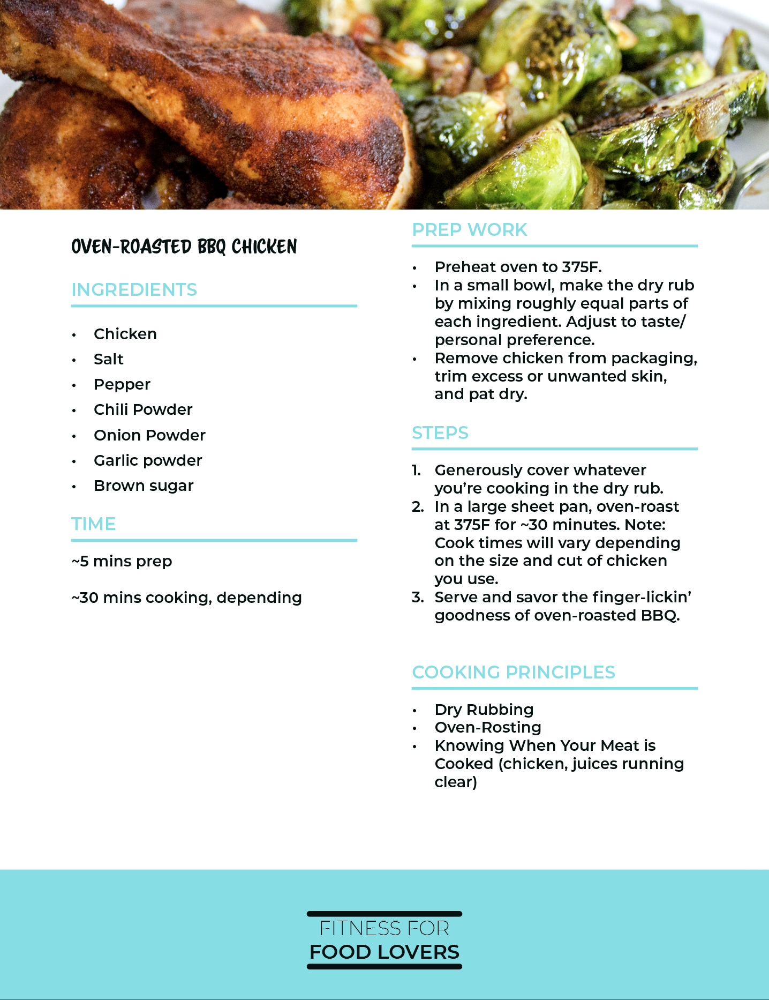
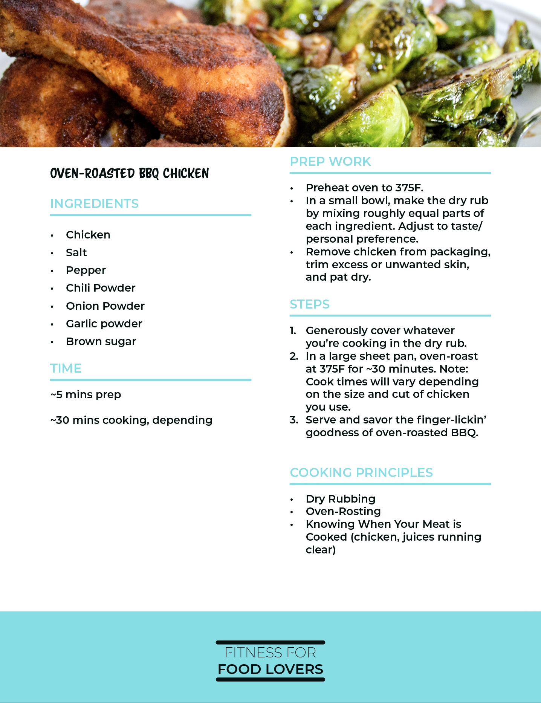

Fitness for Food Lovers
Fitness Training
Overview
I designed a course for Fitness for Food Lovers to teach their clients introductory cooking principles so they could make delicious, nutritious food so they could achieve their fitness goals in the most enjoyable way possible.
Define
What is the business need?
The business, Fitness for Food Lovers, needed a marketing tool that would establish them as an expert in their industry, offer great value at low cost, and generate leads for the business.
Who are the learners?
The learners are men and women, typically between 30-50, who want to learn to cook more delicious, nutritious food so they can enjoy the process of achieving their fitness goals. They also want to come across as impressive to dinner guests by presenting artistically prepared meals when hosting social events.
What are the learning gaps?
To determine the learning gaps, I conducted on online survey and led informational interviews with the company’s trainers. From the survey and interviews, I determined the following gaps:
- Learner doesn’t know what to eat to be healthy
- Learner doesn’t know how to fix flavors that are slightly off
- Learner doesn’t know how to cook food that is both delicious and healthy
- Learner doesn’t know how to present their food to dinner guests in a way that is impressive and not amateurish or typical
How will we evaluate success?
Referring to Kirkpatrick’s 4 levels of evaluation, I wanted to determine easy-to-track metrics that would focus on learners’ behavior and increased business for Fitness for Food Lovers.
Learner Behavior
Are the learners using the information from the course in preparing their food? I will obtain this data through surveys sent out by the trainers.
Business Impact
Has the course been an effective tool of generating new leads for the trainers? I will have access to Fitness for Food Lovers’ tracking software, which will provide this data.
Design
Design Challenge
In order for this course to be effective it will need to cover a variety of intimidating topics and take no longer than 20 minutes.
Design Thinking Behind the Deliverables
Theories and models I found helpful in designing these courses:
- SAM
- To keep this project on track, it’s crucial to manage the timeline well. I often reference the SAM model to help expedite the course production process.
- ADDIE
- I don’t typically think of ADDIE as a model, but more of a dictionary that’s good to reference to make sure I didn’t miss anything important.
- Kirkpatrick’s Levels
- I’ve always found this model useful for setting up evaluation.
- Gagne's 9 Events
- While I don’t think all nine events apply for every learning experience, I find this a useful framework for mapping out activity types and how to sequence them.
- Micro-Learning
- I find this concept especially important in the online space, since learners face a great deal more opportunity for distraction.
Develop
Deliverables
- Web-Based Courses
- Since the learners live across the US, and factoring in the budget, timeline, scope, and intention of this course, using a web-based format was the best option. The course includes the following elements:
- Videos: I scripted, storyboarded, recorded, and edited a motion graphic and five walkthrough videos for the course to keep the content fun and engaging. The walkthrough videos are also a way for Ben, the business owner, to establish a relationship with the learners.
- Knowledge Checks and Assessments: I’m including an assessment before and after the course to determine how well the content was delivered. I include several knowledge checks after trickier concepts to make sure the learners understood the information provided.
- Interactive Activities: To keep the learning experience fun and engaging, I used a variety of activity templates in Articulate Rise to make the content more interesting and easier to understand.
 

- Workbook
- This downloadable PDF doubles as a cookbook that includes the recipes used to demonstrate the various cooking concepts in the course videos. It also includes writing prompts to help the learner solidify the knowledge they gained from the course.
- Flavor Star
- Downloadable PDF that can be put on the learners fridge as an easy reference for how to balance the different flavors.
- Flavor Profile Chart
- Downloadable PDF that can be put on the learners’ fridge that tells which spices and herbs to mix together to make their food taste like a certain cuisine—includes common herbs and spices for Indian, Japanese, Mexican, Italian, Greek, and American BBQ cuisines.
Tools Used
- Articulate: To create the web-based training
- Photoshop: To create images and graphics for activities in course and field guide
- Illustrator: to create graphics for Flavor Star and Flavor Profile Chart
- InDesign: To create the PDF deliverables
- After Effects: To create the motion graphics
- Premier Pro: To edit the video walkthrough videos
- SoundForge: to edit the audio for the videos and motion graphic
- Word: To script the course, videos, motion graphic, and PDFs
Deliver
Business Impact
While this course has not yet launched, it has already had a positive impact on the business by providing content that’s easily repurposed for marketing on YouTube as well as providing a more organized approach to Fitness for Food Lovers’ coaching process. Ben Johnson, owner of Fitness for Food Lovers, has helped his clients achieve their fitness goals more effectively and increased his client acquisition through advertising campaigns on social media and search engines as a direct result of this course.
Ben Johnson, the owner, was kind enough to write the following:
“Working with Peter is fantastic. Not only did he consistently deliver high-level and quality work, but he also exceeded my expectations at every turn. He was invaluable.” -Ben M. Johnson, Owner at Fitness for Food Lovers